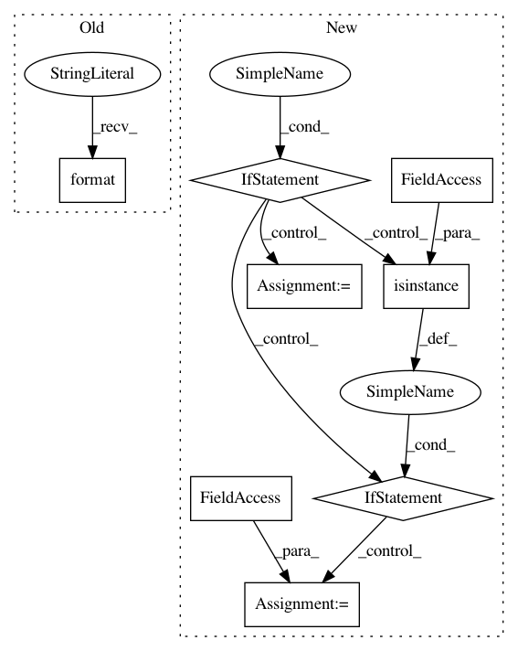

2ef0496c6dcccf282add3cc446d5e66cd9c9a9a3,src/python/pants/engine/selectors.py,Get,extract_constraints,#Any#,79
Before Change
"got: ({})".format(Get.__name__, render_args()))
return (product_type.id, subject_declared_type.id)
else:
raise ValueError("Invalid {}; expected either two or three args, but "
"got: ({})".format(Get.__name__, render_args()))
@classmethod
def create_statically_for_rule_graph(cls, product_type, subject_type) -> "Get":
After Change
// If the Get was provided with a type parameter, use that as the `product_type`.
func = call_node.func
if isinstance(func, ast.Name):
subscript_args = ()
elif isinstance(func, ast.Subscript):
index_expr = func.slice.value
if isinstance(index_expr, ast.Name):
subscript_args = (index_expr,)
else:
raise ValueError(f"Unrecognized type argument T for Get[T]: {ast.dump(index_expr)}")
else:
raise ValueError(
f"Unrecognized Get call node type: expected Get or Get[T], received {ast.dump(call_node)}")
// Shuffle over the type parameter to be the first argument, if provided.
combined_args = subscript_args + tuple(call_node.args)
if len(combined_args) == 2:
product_type, subject_constructor = combined_args
In pattern: SUPERPATTERN
Frequency: 3
Non-data size: 8
Instances
Project Name: pantsbuild/pants
Commit Name: 2ef0496c6dcccf282add3cc446d5e66cd9c9a9a3
Time: 2019-11-27
Author: 1305167+cosmicexplorer@users.noreply.github.com
File Name: src/python/pants/engine/selectors.py
Class Name: Get
Method Name: extract_constraints
Project Name: statsmodels/statsmodels
Commit Name: 72e735a98644b76208d558c0b85150190594c5b1
Time: 2020-06-28
Author: kevin.sheppard@gmail.com
File Name: statsmodels/tsa/tsatools.py
Class Name:
Method Name: add_trend
Project Name: sony/nnabla
Commit Name: edd86f6318b411a42a1f287fa6359bbfd12fa71c
Time: 2019-06-24
Author: stephen.tiedemann@sony.com
File Name: python/src/nnabla/functions.py
Class Name:
Method Name: scatter_nd